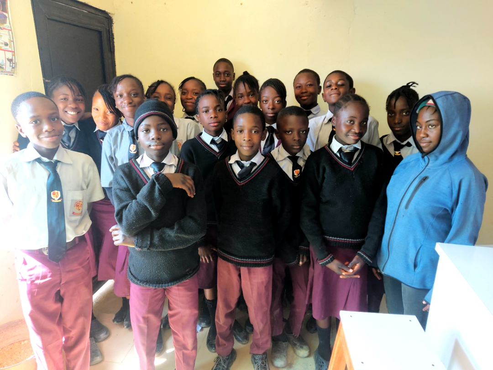

JETS CLUB
Junior Engineers, Technicians, and Scientists (JETS) Club is a science club for students that aims to develop their scientific and technical skills. The club's activities include projects, competitions, and excursions.
What we do
Members
- Nanshap Dagean
- Divine-Favour .P.
- Maryam Abdul Ganiyu
- Al-amin Muhammed
- Rotkangmwa Ishaya
- Timbyen Joshua
- Rinbyen Joshua
- Ta'an Kyeensih
- Sonia Urah
- Longdi Habila
- Afodia Iliya
- Glory Bode
- Grace Kefas
- Mmaninan Bitrus
- Tofchen Shammah
- Magit Mangut
- Mark Uyi
Instructor
Godwin Omadefu Nehemiah